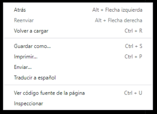

Las reglas son simples: Si estás en una computadora tenes que hacer click derecho y seleccionar "inspeccionar".

Ahora selecciona este botón que ves aquí (sin miedo que no muerde)Bien, ahora ves una casilla para tu respuesta.Ahora bien, la pregunta:¿En que año se inventó el objeto que, en general, podemos llevar a todos lados pero usualmente hay uno conectado a la pared en cada casa?¡Buen trabajo! Ahora clickeame para abrir el tesoro.